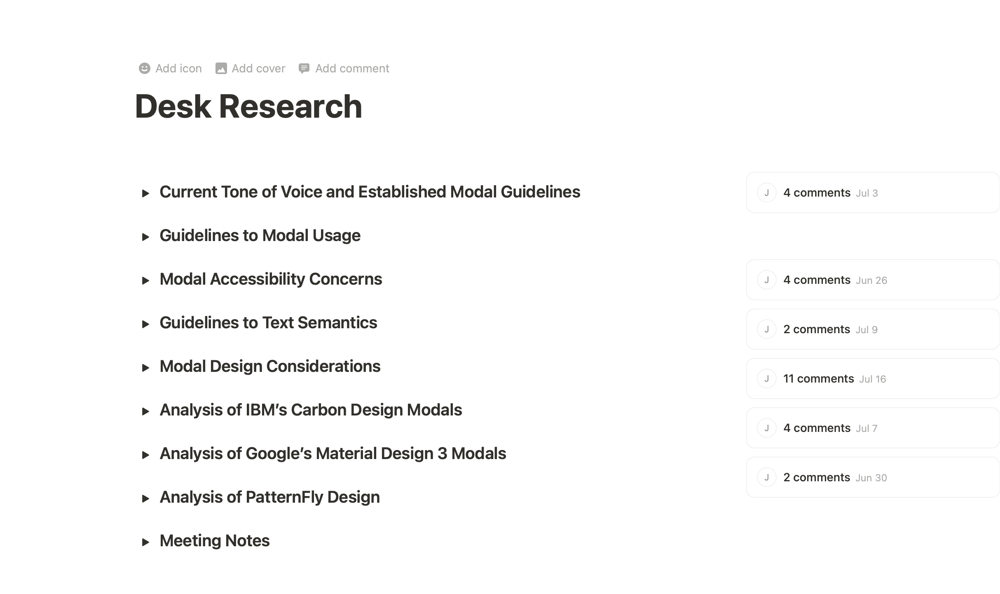
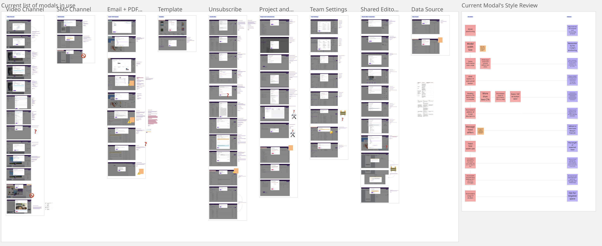
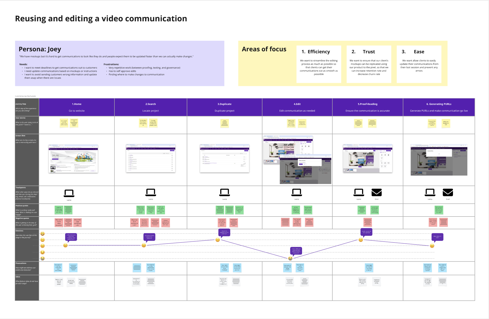
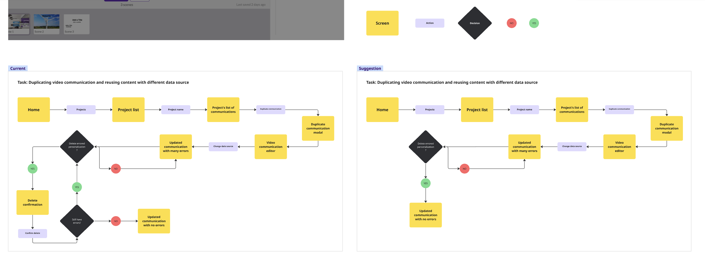

UX Designer
ToolFigma, Miro, Powerpoint
DurationJune 2025 to August 2025
The Goal
Precisely is a data-empowered communication service platform that enriches a large quantity of information with context and security, ensuring trusted and accurate data to all users. One of the primary tasks I was assigned during my internship was to develop and refine the style guide for cross-platform modal consistency.
Problem Statement: Style and copy consistency help build trust with our users. We’ve noticed a bit of inconsistency and want to verify alignment of the message copy with the establishment of our Tone of Voice.
Client Challenges: Distrust in product reliability, confusion, and loss in efficiency when unreliable modals cause friction for users completing their task.
Client Benefits: Adhering to standards enables users to know what to expect, increase learnability, reduce confusion, and increase trust in our product.
Objective: Building trust with users by increasing product consistency.
Secondary Research
Gathered and organized all the modals that were currently in use and analyzed their inconsistent layout, size, behavior, and message copy.
Heuristic Review
Dived straight into doing secondary research on best modal usage and guidelines, highlighting advice from reputable and insightful sources like NNG and Uxel.
Competitive Analysis
Spearheaded a competitive analysis on Precisely’s indirect and direct competitors and examined what they were doing well or not to make more informed design decisions when improving our modals.
Key Takeaways
1. Areas of focus around the patterns of inconsistent modals are found primarily in position aligment, button states, case usage & punctuation, and input area width sizes.
2. Competitive analysis results share that most modals handle the state of overflowing content as extending the modal vertically, NOT horizontally.
3. Analysis uncovers modal compoenents to differ, especially with case usage and alignment of call-to-action buttons.
Journey Mapping
Developed and presented a consumer journey map on problematic modals to the team and encouraged feedback to gain more perspectives on current and new solutions.
Userflows
Created userflows to better convey user pain points to the team while offering a more effective and time-efficient path.
After touching base with my manager to align all the modal style consistency considerations, I was ready to hand off to the engineers. I had prepared several detailed documents of modal style guidelines and usage for all current and future modals.
I also delved into Figma and delivered over 40 pixel-perfect revisions and laid a strong foundation for other modals that were deemed out of scope and offered solutions to specific edge cases that future modals could potentially encounter. By the time of my departure, some of the revisions I had handed off to the engineers had already been implemented, and many others were in progress.
The three months I had the privilege of learning at Precisely and collaborating with their talented UX team was the
most productive summer I had ever spent. With the encouragement and support of my team, I was able to learn a lot
of professionalism simply through watching how others presented their cases and collaborated with engineers and
product managers.
Some of the biggest takeaways I learned were how important and useful proper and intentional documentation of
one’s work can be. Not only does it help organize your project, but it also cuts down on the time spent explaining
everything you’ve done to other collaborators who will inevitably be added to the project.
Another takeaway I
learned was how crucially essential it is to be on top of your project scope. Being excited is all good and all,
but it is even better to set appropriate goals and milestones, especially if it is as easy for you as it was for
me to get blindsighted into researching and ideating solutions that were not part of my original task. However,
I was able to turn this around by gaining and exercising another crucial skill to have, allowing flexibility while
remaining adapatibile in a time-constrained situation.
Lastly, communication, there really is a difference in how much
of an impact one’s public speaking and ability to convey their design decisions to others plays in getting through
to the shareholders why a design decision is worth implementing. I strive to grow and refine these skills as I
continue taking on new and exciting challenges in my future work.